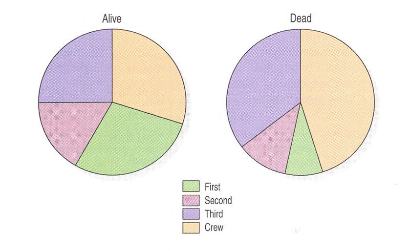

Introduction to Data Science
Probability Refresher - Class 2
Giora Simchoni
gsimchoni@gmail.com and add #intro2ds in subject
Stat. and OR Department, TAU
Discrete Probability
Discrete Probability
- Sample space: A set \(\Omega\), finite or countably infinite, of possible outcomes
- Probability distribution: A real, non-negative function \(F: \Omega \to [0,1]\), with \(\sum_{\omega \in \Omega}F(\omega) = 1\)
- For every subgroup \(A \subseteq \Omega\) define \(F(A) = \sum_{\omega \in A}F(\omega)\)
- Random variable (RV) \(X\) is distributed \(F\) (marked \(X \sim F\)) if: \[Pr(X \in A) = F(A)\]
Expectation
- For a real random variable \(\Omega \subset \mathbb{R}\)
- If \(X \sim F\) then the expectation (mean) of \(X\) is the weighted average by \(F\): \[E(X) = \sum_{\omega \in \Omega} \omega \cdot F(w)\]
- Expectation properties:
- Additivity: \(E(X + Y) = E(X) + E(Y)\)
- Linearity: \(E(aX + b) = aE(X) + b\) for scalars \(a, b\)
- Invariance is not guaranteed for any function \(f\): \(E(f(X)) \neq f(E(X))\)
Variance and Standard Deviation
- Variance measures squared dispersion of an RV’s values around its mean: \[Var(X) = E[(X - E(X))^2] = \sum_{w \in \Omega} (w - E(X))^2F(w)\]
- Standard deviation is the squared root of the variance: \[SD(X) = \sqrt{Var(X)}\]
- Variance properties:
- \(Var(X) = E(X^2) - 2E^2(X) + E^2(X) = E(X^2) - [E(X)]^2\)
- Additivity is not guaranteed: \(Var(X + Y) \neq Var(X) + Var(Y)\) (unless independent, see later)
- Linearity is not really linearity: \(Var(aX + b) = a^2Var(X)\) for scalars \(a, b\)
Discrete Distributions
Bernoulli Distribution
- For Bernoulli distribution \(\Omega = \{0, 1\}\) or any two other values
- Mark \(X \sim Ber(p)\)
- Example: \(X\) is the number of heads in a toss of a fair coin, \(X \sim Ber(0.5)\)
- PDF: \(Pr(X = 1) = p\)
- Expectation: \(E(X) = p \cdot 1 + (1-p) \cdot 0 = p\)
- Variance: \(Var(X) = E(X^2) - [E(X)]^2 = p - p^2 = p(1-p)\)
Binomial Distribution
- Let \(X_1, \dots, X_n \sim Ber(p)\) independently, then their sum \(Y\) distributes Binomial: \[Y = \sum_{i=1}^{n}X_i \sim Bin(n, p)\]
- For Binomial distribution \(\Omega = \{0, 1, \dots, n\}\)
- PDF: \(Pr(Y = k) = {n \choose k} p^k (1-p)^{n-k}\)
- Example: \(Y\) is the number of heads in 10 tosses of a fair coin, \(Y \sim Bin(10, 0.5)\)
- Expectation: \(E(Y) = E(\sum_i X_i) = np\) (by additivity)
- Variance: \(Var(Y) = Var(\sum_i X_i) = \sum_i Var(X_i) = np(1-p)\) (by independence, additivity)
- In example: \(E(Y) = 5 \quad Var(Y) = 2.5\)
Poisson Distribution
- For \(X \sim Pois(\lambda)\), \(\Omega = \{0, 1, 2, \dots \}\) (inifinite sample space)
- PDF: \(Pr(X = k) = e^{-\lambda}\frac{\lambda^k}{k!}\)
- Expectation: \(E(X) = \sum_{k=0}^{\infty}k \cdot e^{-\lambda}\frac{\lambda^k}{k!} = \sum_{k=1}^{\infty}k \cdot e^{-\lambda}\frac{\lambda^k}{k!} = \lambda e^{-\lambda} \sum_{k=1}^{\infty}\frac{\lambda^{k - 1}}{(k-1)!} = \lambda\)
- Variance: \(Var(X) = E(X^2) - [E(X)]^2 = \lambda^2 + \lambda - \lambda^2 = \lambda\)
Poisson Distribution (II)
- Important in practice since it describes well common processes:
- number of customers arriving in line to get tickets at the cinema
- number of radioactive particles emitted in some period \(t\)
- number of mutations in the genome in some period \(t\)
- Key charactesristic: memoryless
- As time \(T_t\) to next event is independent from time \(T_{t-1}\) it took to previous event, the number of events in time \(T_t\) distributes Poisson
- Additivity under independence:
- \(X \sim Pois(\lambda_1)\), \(Y \sim Pois(\lambda_1)\), then: \(X + Y \sim Pois(\lambda_1 + \lambda_2)\)
Empirical distributions and relations between RVs
Empirical distribution
- We have \(n\) observations (a sample): \(x_1, x_2, \dots, x_n\)
- Let \(\Omega\) be the sample space: \(\Omega = \{x_1, x_2, \dots, x_n\}\)
- If there are no ties, the empirical distribution \(F\) would be: \[F(x_i) = \frac{1}{n} \text{ for each } i\]
- Otherwise we can generalize: \[F(x_i) = \frac{|\{j: x_j = x_i\}|}{n}\]
- The sample can now be described via its empirical distribution:
- if the observations are real, what is the empirical distribution’s expectation?
- What is the meaning of \(F(\omega_1) = F(\omega_2)\) for \(\omega_1, \omega_2 \in \Omega\)?
Example: The Titanic’s Passengers
| Survived | Age | Sex | Class |
|---|---|---|---|
| Dead | Adult | Male | Third |
| Dead | Adult | Male | Crew |
| Dead | Adult | Female | Third |
| Alive | Adult | Female | First |
| Dead | Adult | Male | Crew |
Given information about passengers, what questions might we be interested in and statistically examine?
Basic definitions
- Suppose we have data regarding two (or more) variables in the dataset, mark as \(X, Y\)
- \(X\) values \(x_1, \dots, x_K\)
- \(Y\) values \(y_1, \dots, y_L\)
- In Titanic example: \(X\) might be the Class (\(K = 4\)), and \(Y\) survival status (\(L = 2\))
- Let’s formalize the empirical distributions and ask interesting questions
Distribution I: the Marginal Distribution
- \(P(X)\) is the empirical distribution of the Class
- Its properties:
- \(P(X = x_k) \geq 0 \quad \forall k\)
- \(P(X = x_1) + P(X = x_2) + \dots + P(X = x_K) = 1\)
- What representation is suitable?
Distribution II: the Joint Distribution
- \(P(X, Y)\) is the empirical joint distribution of the two variables
- Its properties:
- \(P(X = x_k, Y = y_l) \geq 0 \quad \forall k,l\)
- \(\sum_{k = 1, \dots, K, l = 1, \dots, L}P(X = x_1, Y = y_l) = 1\)
- \(P(X = x_1, Y = y_l) + P(X = x_2, Y = y_l) + \dots + P(X = x_K, Y = y_l) = P(Y = y_l)\)
- What representation is suitable?
The Contingency Table
- Note the table also includes the marginal distributions
- In order to get percentages (emprical probabilities) divide the numbers by their total, here 2201
Distribution III: the Conditional Distribution
- This is the probability that \(Y\) receives each of its values given \(X\) is fixed at some value
- The empirical conditional distribution of \(Y\) given \(X\) is marked \(P(Y|X)\)
- Its properties:
- \(P(Y = y_l | X = x_k) \geq 0 \quad \forall k,l\)
- \(P(Y = y_1 | X = x_k) + P(Y = y_2 | X = x_k) + \dots + P(Y = y_L | X = x_k) = 1\)
Distribution III: the Conditional Distribution
Bayes’ Theorem: \[ \begin{aligned} P(Y = \text{Alive} | X = \text{First}) &= \frac{P(X = \text{First}, Y = \text{Alive})}{P(X = \text{First})} \\ &= \frac{P(X = \text{First} | Y = \text{Alive}) \cdot P(Y = \text{Alive})}{P(X = \text{First})} \end{aligned} \]
Law of total probability: \[ \begin{aligned} P(Y = \text{Alive}) &= P(Y = \text{Alive}|X = \text{First})P(X = \text{First}) + \dots \\ &+ P(Y = \text{Alive}|X = \text{Crew})P(X = \text{Crew}) \end{aligned} \]
The marginal, joint and conditional distributions can be put in a single (crowded) table:
- Find the empirical marginal distribution of \(X\) (Class). What is \(P(X = \text{First})\)?
- Find the empirical joint distribution of \(X, Y\). What is \(P(X = \text{First}, Y = \text{Alive})\)?
- Find the empirical conditional distribution of \(Y|X\). What is \(P(Y = \text{Alive}| X = \text{First})\)? See that Bayes’ theorem holds.
Graphical methods for conditional distributions
What conditional distribution is represented here, \(P(Y|X)\) or \(P(X|Y)\)?
Independence, Covariance and Correlation
Independence between RVs
- Are \(X, Y\) dependent?
- Independence intuitive meaning: knowing \(X\) does not “add” knowledge on \(Y\), and vice versa.
- More formally, the marginal distribution is equal to the conditional distribution: \[P(Y|X) = P(Y)\]
- Note: if \(P(Y|X)\) is equal to \(P(Y)\), then necessarily –
- \(P(X|Y) = P(X)\)
- \(P(X, Y) = P(X)P(Y)\)
- Also: \(E(XY) = E(X)E(Y)\)
Covariance
- Covariance is a measure of the joint variability of two RVs \(X\) and \(Y\)
- Formally: \[Cov(X, Y) = E_{XY}[(X - E(X))(Y - E(Y))] = E(XY) - E(X)E(Y)\]
- The expectation is on the joint distribution of \((X, Y)\)
- Can think of it as a measure of correlation between \(X\) and \(Y\) (not dependence!)
Covariance
- Some properties
- When \(X, Y\) are independent: \(Cov(X, Y) = 0\) (opposite is not necessarily true!)
- If when \(X\) gets “high” values so does \(Y\) tend to get high values: \(Cov(X, Y) > 0\)
- If when \(X\) gets “high” values \(Y\) tends to get “low” values: \(Cov(X, Y) < 0\)
- What is \(Cov(X, X)\)?
- “Linearity”: \(Cov(aX + b, cY+d) = acCov(X, Y)\)
- Now we can always write: \(Var(X \pm Y) = Var(X) + Var(Y) \pm 2Cov(X, Y)\)
Correlation
- Since the magnitude of covariance is hard to interpret
- Let us standardize: \[\rho_{XY} = Corr(X, Y) = \frac{Cov(X, Y)}{SD(X)SD(Y)}\]
- \[-1 \leq Corr(X, Y) \leq 1\]
- For a sample of \(n\) pairs \((x_i, y_i)\): \[r_{XY} = \frac{\sum_{i=1}^{n} (x_i - \overline{x})(y_i - \overline{y})} {\sqrt{\sum_{i=1}^{n} (x_i - \overline{x})^2 \sum_{i=1}^{n}(y_i - \overline{y})^2}}\]
- Nice geometric interpretation: Cosine similarity between two vectors (samples): \(r_{xy} = \cos\theta = \frac{\bf{x}\cdot\bf{y}}{||\bf{x}||||\bf{y}||}\)